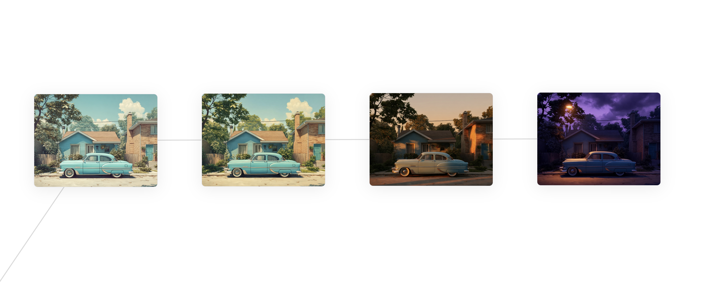

April 2026
Interaction Modes for Creative Exploration
Ideas often begin as faint sensations: a single image, a thought, a desire to express a feeling. Miyazaki says "you can start with a vague yearning…a certain sentiment, a slight sliver of emotion — whatever it is". Following that, the real work begins to give shape to the idea and that often starts with unfettered exploration. Our tools shouldn't stand in the way of this; they should allow us to frictionlessly explore the creative space at the speed of imagination — to rapidly generate, edit, tweak, curate, remix, cut, layer and whatever else is needed to drag an idea from dreamland into the real world.
Today we're building the dream machines — media generation models — that allow us to project our ideas onto pixels. And they are rapidly improving and becoming widely adopted across industries. But while this is the case, it still feels that we're missing interaction modes to help us fully unlock their power. Rather, it feels like we're missing tools that are aligned with how the creative mind wants to work. If you look around at most companies providing visual content generation, their interfaces are still often linear and centred primarily on text prompting. There's a lot of friction and it's not simply because generation is still high latency. There are few options that help the user actually explore new and interesting territory in the search space whether that's through intentional adjustments e.g. edits, or serendipitously e.g. via associative search. What if we could instead design tools to be great collaborators thereby better able to support creative exploration?
Below are my explorations of that question concentrating on generating variations along a conceptual dimension.
Concept 1: Dimensions
My starting point was dimensions of change. Inspired by Bryan Loh's post on creative exploration and latent spaces, I envisioned allowing the user to create variations of an initial image along a specific dimension. The intent here was to allow the user to quickly visualise alternatives that might inspire new creative avenues.
For example, a user could explore colour variations or even concepts like "temperature". Other examples could be "age", "sweetness" or perhaps even more abstract dimensions like "democracy" (Of course, they don't have to be single words). Here's an example.
As I started to poke at this thought, it became immediately clear though that not all concepts could be easily specified by a continuous scale e.g. "mode of transportation". On top of that, I realised there's so much room for ambiguity. Changes like "mode of transportation" might be seemingly obvious but what about "temperature"? Does the user mean hotter or colder? What does a "democracy" scale even look like? It's clearly difficult to design something that works well and so without shame, and for the sake of these early explorations I actually deferred this judgement to an LLM.
I prompted an LLM to generate N variants based on the description of the initial image and the user's specified dimension of change. The LLM is instructed to match the initial description changing only the aspects related to the user's suggested change and to attempt to form a natural progression. One benefit of using LLMs is that there is always the possibility of surprise, which is an advantage for creative work.
Below is an example of an attempt to make the original image 'more dramatic'. What I had in mind was something closer to the third variant in this chain i.e. applying warmer colours, so the LLM surprised me with the final night scene.

Concept 2: Spatial Distance
I decided on a canvas UI to amplify the feeling of unfettered exploration. I wondered though how we could represent the number of steps along a dimension. It seemed natural to use distance from the origin to represent this so the further the user pulls from the original image the more intermediate nodes will be generated. The number of generations is shown by dots on the line.
Concept 3: Parallel Application
It felt quite natural to then take this idea of graded variations and want to apply that to multiple base images simultaneously. In practice, you can imagine wanting to apply a 'style' to multiple inputs.

I have to admit that the above example came out too well as each base image was prompted independently.
Concept 4: Interpolation
The last idea I wanted to test was automatic interpolation between two images i.e. allowing the system to define a dimension of change based on the inputs and then generating intermediate images.
I initially tackled this using image-to-image video generation model and extracting intermediate frames. The challenge here was choosing which frames to extract so that the visual isn't an awkward transition moment as in the case below.

I didn't solve that problem directly and instead decided to switch back to image generation prompting the LLM to take the scene descriptions from the start and end nodes, identifying a dimension of change, categorising as continuous or discrete, and then generating suitable image prompts following that. Below were the results from that experiment.

The results are far from usable and I didn't spend long on fine-tuning my prompt. So hopefully, with more time experimenting something more reasonable could be attainable!
End
These ideas merely scratch the surface and don't pretend they are whatsoever novel. Nevertheless, it was satisfying to test them for myself. I hope they reinforce that with a little imagination, we can explore new interfaces that better match the pattern of thinking for creative work. I would love to see other features for exploration such as combination (e.g. mixing) as well as alternate controls for prompting e.g. sliders.
All the code for this experiment was created with Claude and is available on my GitHub. I used FAL for access to generation models API and Gemini models for the LLM. If you're working with generative media tools and interfaces, feel free to reach out. Would love to hear your ideas.
March 2026
How Compaction Works in Hermes Agent
Nous Research recently released Hermes Agent — an open-source personal agent similar to OpenClaw. One of the aspects I was most curious about was context management and in particular compaction given that effective context management is arguably the most critical requirement for maximising agent performance in long-running contexts. In this post, I document Hermes' approach to compaction: how, where and when.
The How
Compaction compresses the agent's current context into a smaller number of tokens. This is usually done out of necessity to ensure the input fits into the LLMs context or for performance as performance has been shown to decrease with longer contexts. In theory, there are many ways to shrink the context window from naive implementations like deleting everything or retaining the last few messages to more sophisticated pruning. Getting this right is important to ensuring the agent can effectively continue the task without a performance drop or needing to remind it of the entire context. This is precisely why I was curious about how Hermes implements compaction. Thankfully, Hermes is neatly documented and Nous tells us exactly how they do it in plain English:
Compress conversation messages by summarizing middle turns.
Algorithm:
1. Prune old tool results (cheap pre-pass, no LLM call)
2. Protect head messages (system prompt + first exchange)
3. Find tail boundary by token budget (~20K tokens of recent context)
4. Summarize middle turns with structured LLM prompt
5. On re-compression, iteratively update the previous summary
After compression, orphaned tool_call / tool_result pairs are cleaned
up so the API never receives mismatched IDs.It's worth describing the overall approach before diving in. Essentially, Hermes Agent chunks up the conversation history into a head, torso and tail. The head and tail are left untouched and the middle portion is summarised. This is actually the same approach OpenClaw takes. Now, how does each part work?
1. Prune old tool results
This step is pretty ordinary — go through each old tool call and replace the result with placeholder
text where ‘old’ is defined as anything in the middle portion of the context window. More precisely,
only long tool results are replaced with the placeholder string
[Old tool output cleared to save context space].
On first glance, it wasn’t immediately obvious why pruning tool results was necessary before I read
the above placeholder string. Reducing the size of the context to be compacted could positively
impact compression performance. You could argue that tool results could be valuable to have for
summarisation, but I guess it’s assumed that results are already sufficiently described in the
agent’s conversational messages so that the results themselves aren’t actually sufficiently
valuable. Anthropic
also seem to do the same arguing that old tool calls aren't
valuable.
result = [m.copy() for m in messages]
prune_boundary = len(result) - protect_tail_count
for i in range(prune_boundary):
msg = result[i]
if msg.get("role") != "tool":
continue
content = msg.get("content", "")
if not content or content == _PRUNED_TOOL_PLACEHOLDER:
continue
# Only prune if the content is substantial (>200 chars)
if len(content) > 200:
result[i] = {**msg, "content": _PRUNED_TOOL_PLACEHOLDER}
2. Protect head messages
This
one is pretty simple. There isn't really a point in summarising the system prompt as it's
independent
of the conversation and I guess first few user messages shape the entire task. The default number of
messages in the head is set to 3 but the precise number can vary depending on tool call behaviour.
The
actual algorithm ensures that the last message in the head is not a tool result and instead the head
size
increases to ensure the middle region doesn't start with an orphaned tool call or result. Not much
more
to say here.
3. Protect the tail messages
The tail is also reserved because it contains the highest signal of what the agent was most recently
doing. It might be hazardous to poke holes in this and compress it into a lossy signal. One
interesting
design choice here is that the size of the tail is defined by the number of tokens instead of number
of
messages. This allows the tail to scale with the context and ensures significant summarisation can
occur
despite model size. Imagine if the model had small context window and the number of messages in the
tail
consumed a significant portion. Similar to the head, the boundary is also slightly shifted to ensure
tool
call blocks are grouped.
4. Summarise the middle
Now we get to the heart of the algorithm. The middle portion of the message history is passed to an
LLM
which creates a summary based on a structured template. The template asks the LLM to preserve:
- The current goal
- Constraints and user preferences
- Progress towards the goal including tasks complete, in-progress and blocked
- Key decisions that have been made
- Relevant references e.g. files
- Next steps
- Other critical context e.g. config details
The summary can change depending on if there was a previous compaction event that already created a summary. The model used in summarisation is by default the same model as the head agent but another model could also be used. Using the current model prevents problems like mismatched context window sizes or out-of-distribution errors e.g. summarisation model doesn't understand code very well. If a user was to select a model that can't handle the context then the middle portions are simply dropped. As for the risk of out-of-distribution hits, it seems higher in a system like Hermes because it is a general purpose agent that operates across a wide-variety of tasks. In practice, I’m not entirely sure how worrying ‘out-of-distribution’ really is although I’m certain summarisation quality is impacted by model selection and so like everything in AI, it’s best to rely on empirical evidence by evaluating.
Finally, the output summary is returned and appended to a prefix that signals to the model a compaction event happened.
SUMMARY_PREFIX = (
"[CONTEXT COMPACTION] Earlier turns in this conversation were compacted "
"to save context space. The summary below describes work that was "
"already completed, and the current session state may still reflect "
"that work (for example, files may already be changed). Use the summary "
"and the current state to continue from where things left off, and "
"avoid repeating work:"
)
5. Assemble the compressed message
Stitching all the pieces together requires a small amount of work. One of the aspects of this stage
is to
ensure that the messages alternate between 'user' and 'assistant' because this is what LLMs have
been
trained to expect and this is what's required. The role of the summary message therefore is chosen
based
on whichever would preserve this pattern.
last_head_role = messages[compress_start - 1].get("role", "user") if compress_start > 0 else "user"
first_tail_role = messages[compress_end].get("role", "user") if compress_end < n_messages else "user"
# Pick a role that avoids consecutive same-role with both neighbors.
# Priority: avoid colliding with head (already committed), then tail.
if last_head_role in ("assistant", "tool"):
summary_role = "user"
else:
summary_role = "assistant"
# If the chosen role collides with the tail AND flipping wouldn't
# collide with the head, flip it.
if summary_role == first_tail_role:
flipped = "assistant" if summary_role == "user" else "user"
if flipped != last_head_role:
summary_role = flipped
else:
# Both roles would create consecutive same-role messages
# (e.g. head=assistant, tail=user — neither role works).
# Merge the summary into the first tail message instead
# of inserting a standalone message that breaks alternation.
_merge_summary_into_tail = True
if not _merge_summary_into_tail:
compressed.append({"role": summary_role, "content": summary})
There's also a final check to ensure there are no orphaned tool calls or results as provider APIs
also
typically reject this.
That covers the core compression algorithm. But compaction doesn't happen in
isolation — there's meaningful work before and after it runs.
Pre and Post Compaction Processing
Pre-processing
The above algorithm is compaction in isolation but depending on where the algorithm is invoked there
is
some pre- and post-processing. Compaction can be triggered
manually
with the slash command /compress or by the system in the agent loop. The manual trigger
just calls the agent loop method _compress_context so we'll look at that. The method is
here.
Before compaction, the system is prompted to extract any relevant memories before they are possibly lost.
# Pre-compression memory flush: let the model save memories before they're lost
self.flush_memories(messages, min_turns=0)This method actually sends a background user message to nudge an LLM to save any memories worth remembering
flush_content = (
"[System: The session is being compressed. "
"Save anything worth remembering — prioritize user preferences, "
"corrections, and recurring patterns over task-specific details.]"
)
There's some work to prepare the message for different API providers, but essentially an LLM call is
made
with a single tool memory_tool_def to review the entire conversation history and save
any
valuable memories. The tool definition is
here
and is an all-purpose memory tool which gives the LLM access to a memory store and the ability to
add,
replace or remove items. Any tool calls are executed and then the conversation history is cleaned up
to
remove the extra elements injected during the flush event.
Post-processing
Once compaction runs a couple of steps are performed to re-establish the conversation for
continuation.
1. The agent's pending and in-progress task list is appended to the conversation. It's interesting that this is included here because the agent has a separate TODO store that it can access and tasks are also written into the compaction summary. I can only imagine this is done to lower the odds the agent goes off-road.
todo_snapshot = self._todo_store.format_for_injection()
if todo_snapshot:
compressed.append({"role": "user", "content": todo_snapshot})2. The system prompt is rebuilt and added to the top of the conversation history. The system prompt is comprised of the user's memories which may have changed after the flush event before compaction. The cache is also invalidated so that the new system prompt is forced into use instead.
self._invalidate_system_prompt()
new_system_prompt = self._build_system_prompt(system_message)
self._cached_system_prompt = new_system_prompt3. Session records are updated to reflect a compaction event has occurred and counters are reset.
The Where and When
Compaction runs either inside the agent loop or when
manually
triggered as a slash command /compress. Inside the agent loop, compression can
occur in
two places (in
run_agent.py):
- [Proactive] Before a new user request is handled (pre-flight).
- [Reactive] During agent execution when context grows too large. This is triggered after receiving an API error e.g. receiving a 413 error code.
The pre-flight compaction is an interesting edge case. This tries to handle the case where the conversation history already exceeds a threshold number of tokens that should trigger compaction and is checked after a new user message arrives. I wasn't quite sure why this was needed but then understood that a user can manually change the model partway through the conversation and in fact choose a model that has a smaller window compromising the context. The threshold is set by default to be 50% of the current model's context window size. They also handle the case where multiple compactions might be necessary to reduce the current token size to fit a very small model.
if (
self.compression_enabled
and len(messages) > self.context_compressor.protect_first_n
+ self.context_compressor.protect_last_n + 1
):
_sys_tok_est = estimate_tokens_rough(active_system_prompt or "")
_msg_tok_est = estimate_messages_tokens_rough(messages)
_preflight_tokens = _sys_tok_est + _msg_tok_est
if _preflight_tokens >= self.context_compressor.threshold_tokens:
# May need multiple passes for very large sessions with small
# context windows (each pass summarises the middle N turns).
for _pass in range(3):
_orig_len = len(messages)
messages, active_system_prompt = self._compress_context(
messages, system_message, approx_tokens=_preflight_tokens,
task_id=effective_task_id,
)
if len(messages) >= _orig_len:
break # Cannot compress further
# Re-estimate after compression
_sys_tok_est = estimate_tokens_rough(active_system_prompt or "")
_msg_tok_est = estimate_messages_tokens_rough(messages)
_preflight_tokens = _sys_tok_est + _msg_tok_est
if _preflight_tokens < self.context_compressor.threshold_tokens:
break # Under thresholdFinally, there's an upper limit to the number of times compaction can happen per turn which is by default 3 and after which the result is incomplete.
And there you have it. There are likely many alternatives to compaction from approaches like rolling window strategies, more selective exfiltration methods and so forth. This approach favours simplicity and flexibility, which seems like a reasonable approach to take when building such a general purpose agent. I would love to understand what other methods might have been tested and the performance of those relative to thsi approach. If you have any thoughts on compaction or context engineering more generally, please share with me on X at https://x.com/johnlingi.
April 2025
On Starting and Finishing
I’ve struggled countless times to take the first step on a new path. Whether that was a new
direction in
my career, a side project, a new relationship. Typically it’s the big things that prove
insurmountable.
There’s a yearning inside to start but the path and sometimes the end isn’t clear at all. Between
that
deep yearning stands a thick impenetrable fog. A fog swirling with a nasty concoction of fears: fear
of
failure, fear of humiliation, fear of choosing wrong, fear of wasted time. A fog, which in my
personal
experience, only thickens over time as I naively realise the strand of rope left in my lifetime
doesn’t
in fact stretch out to infinity. The usual response is either paralysis or exhaustion from running
endless mental simulations in a desperate attempt to clutch at certainty. I’ve demonstrated all
these
patterns of behaviour — innumerable times. I’m still doing it now even, as I take this break from
work
to figure out my next play. Slowly though, I’ve come to realise a simple truth. The fog never fully
disappears. So the only way is to proceed through it.
There are two books in particular that sit by my side constantly and have been a tremendous source
of
encouragement. ‘Starting Point’, which is a collection of essays from Hayao Miyazaki, and Insisting
on
the Impossible, a biography of Edwin Land. From Miyazaki, I have come to learn that great things can
start with nothing more than a spark of desire. It’s enough to take the first step with just that
yearning I previously described. In the essay series “From Idea to Film” he advises up and coming
animators on starting and says “if the shape is amorphous, you can start with a vague yearning…a
certain
sentiment, a slight sliver of emotion — whatever it is”. He goes on to reassure them that all the
details don’t have to be known — “it is fine if, at times, the original starting point of a
full-length
feature film is the image of a girl tilting her head to the side…it doesn’t matter if the story
isn’t
yet complete. The story will follow. Later still the characters will take shape.” Meticulously
mapping
out the steps from idea to final product seems to be just a surefire way to fall victim to analysis
paralysis. Sometimes faith is needed and I think this is what Steve Jobs meant when he said, you
can’t
connect the dots going forward.
Once you’ve started though, how do you finish? We all know too well that finishing is in many ways
just
as hard as beginning. From what I can tell, it seems to boil down to: accept there will inevitably
be
bumps in the road, take it one step at a time, and have faith ambiguity will resolve itself through
the
work. Working in this way takes humility and persistence. Miyazaki says “At times, your work may be
rejected entirely. When I mentioned earlier that you must have the will to go to any length, this is
what I meant. When you draw that first picture, it is only the beginning of an immense journey”.
Surprisingly Edwin Land is not that well known from my experience, but he is the inventor of instant
photography and the Polaroid camera. The idea for instant photography came to Land via an innocent
question from his daughter, “why can’t I see the picture right away?”. Taken aback, he took a long
walk
to ponder this. He describes the moment as follows: “I went for a walk haunted by my daughter’s
question. And during the course of that walk, the question kept coming up. Why not? Why not make a
camera that gave a picture right away? … Strangely, by the end of that walk, the solution to the
problem
had been pretty well formulated. I would say that everything had been, except those few details that
took from 1943 to 1973.” The point here is that it took him 30 years to figure it out and no amount
of
planning could have resolved all the hurdles he was to face. The way he proceeded was just one
single
step at a time “it is a wonderful dream even though the end is a long way off, for there are about
five
thousand steps to be taken before we realize it. and start taking the first ten, and stay making
twenty
after, it is amazing how quickly you get through those five thousand steps.“ Miyazaki also
encourages us
not get bogged down in the salvo of ambiguities that will crop up during the process. You have to
embrace uncertainty and move forward by doing the work. “what kind of world, serious or comedic;
what
degree of distortion; what setting; what climate; what content; what period; whether there is one
sun or
three; what kinds of characters will appear; what is the main theme? …The answers to all these
questions
gradually become clearer as you continue to draw….Draw as many pictures as you can.” Eventually,
“you
keep on coming nearer to giving the world something worth having.”
What’s become increasingly obvious to me is that certainty is an illusion. Everyone who starts and
finishes seems to have developed a tolerance for ambiguity. It’s difficult to wrestle with because
there’s no guarantee of success either to reward this effort and Miyazaki states it bluntly to the
aspiring animators “it holds no guarantees in terms of pay or time”. How will you know though
without
venturing forth? The only guarantee seems to be that the journey will transform you. And perhaps,
that
is all we can ask for.
How do you manage the challenges of beginning and ending?